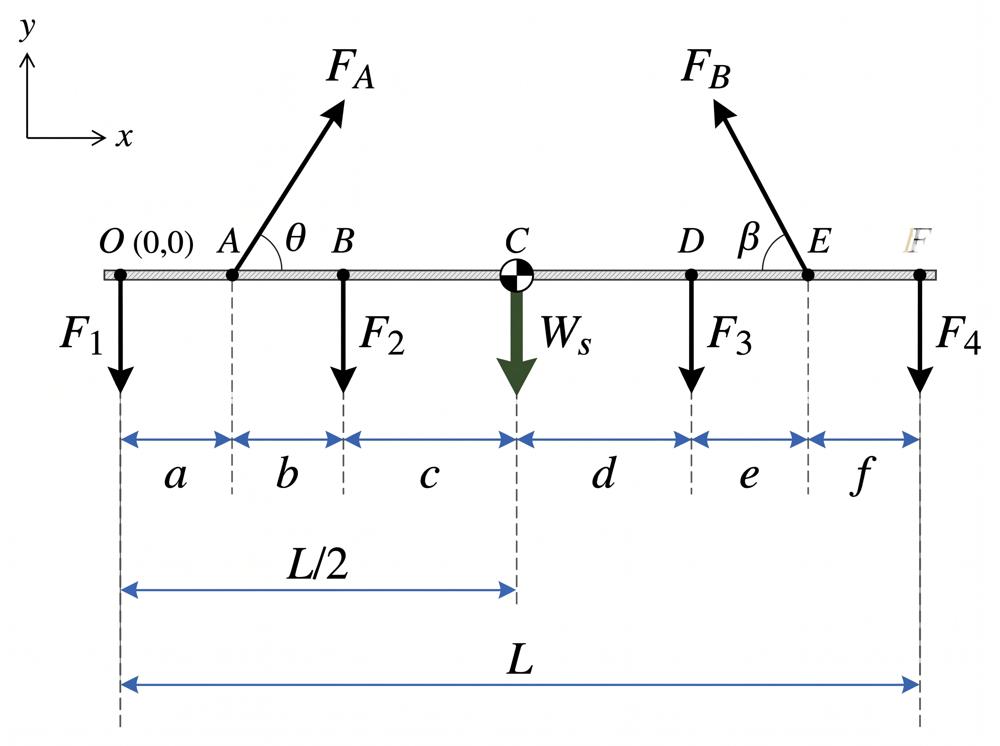

Beban
= – kN
= – kN
Posisi dari O (m)
Sudut sling (dari horizontal)
Hasil Reaksi
Fa sin θ (vertikal)–
Fb sin β (vertikal)–
Gaya tarik sling Fa–
Gaya tarik sling Fb–
|V| maks (gaya geser)–
|M| maks (momen bending)–
|N| maks (gaya normal)–
Free Body Diagram – Kasus Pembebanan

Shear Force Diagram (kN)
Bending Moment Diagram (kN·m)
Normal Force Diagram (kN)
Persamaan & Perhitungan
Isi massa beban untuk menampilkan perhitungan.